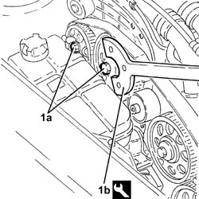
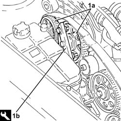

1032B58 RIGHT CYLINDER HEAD DRIVEN TOOTHED PULLEYS - R.R.
- Path
- Procedures > 10 ENGINE UNIT > 1032 TIMING SYSTEM > 1032B BELT TIMING SYSTEM > 1032B58 RIGHT CYLINDER HEAD DRIVEN TOOTHED PULLEYS - R.R.
- Kind
- repair procedure (removal / refitting; the operation number is the code)
- Applies to
- engines: 3.2 V6; all production periods
- Interactive page
- https://sloeber94.github.io/elrnDB-aGt/en/#/125000968
Applies to: engines: 3.2 V6; all production periods
 Removing
Removing
 Refitting
RefittingPosition the vehicle on the ramp
Proceed with removal
Op. 4450B04 RIGHT FRONT WHEEL R R
Proceed with removal
Proceed with removal
Op. 7055B64 LH OR RH REFLECTOR(ONE) ON REAR BUMPERS - R R
Proceed with removal
Proceed with removal
Op. 1092G10 SINGLE ENGINE BELT R R
Proceed with removal
Proceed with removal
Op. 1092A10 CRANKSHAFT SERVICES PULLEY - R.R.
Proceed with removal
Proceed with removal
Op. 1032D12 TIMING SYSTEM PROTECTIVE COVER(S) - R + R
Proceed with removal
Proceed with removal
Op. 1016A42 LEFT HAND CYLINDER HEAD IGNITION COIL COVER - R+R
Proceed with removal
1. Undo the bolts (1a) fixing the driven pullies using the tool (1b) for counter-torque.
Op. 5510C16 LEFT HAND CYLINDER HEAD IGNITION COIL - R+R
Op. 1016A30 LEFT CAM COVER - R + R AND REPLACE GASKET
Op. 1072B50 SLEEVES CONNECTING AIR CAPACITY BOX TO INLET MANIFOLD IS - R+R
Op. 5510C18 RIGHT HAND CYLINDER HEAD IGNITION COIL - R+R
Op. 1016A34 RIGHT-HAND CAM COVER - R + R AND REPLACE GASKET
Op. 1032B10 TOOTHED TIMING BELT - R + R FOR TIMING ADJUSTMENT OR REPLACEMENT
 | Name | Country |
|---|---|---|
1b | Counter-torque | 1.822.146.000 |

Applies to: engines: 3.2 V6; all production periods
1. Remove the driven pullies (1a) using the tool (1b).
| Name | Country |
|---|---|---|
1b | Extractor | 1.860.954.001 |

Applies to: engines: 3.2 V6; all production periods
Refitting
RemovingPlace the driven toothed pullies back in their housings and secure them without tightening the bolts.
Proceed with refitting
Op. 1032B10 TOOTHED TIMING BELT - R + R FOR TIMING ADJUSTMENT OR REPLACEMENT.
Proceed with refitting
Op. 1016A34 RIGHT-HAND CAM COVER - R + R AND REPLACE GASKET.
Proceed with refitting
Op. 5510C18 RIGHT HAND CYLINDER HEAD IGNITION COIL - R+R.
Proceed with refitting
Op. 1072B50 SLEEVES CONNECTING AIR CAPACITY BOX TO INLET MANIFOLD IS - R+R.
Proceed with refitting
Op. 1016A30 LEFT CAM COVER - R + R AND REPLACE GASKET.
Proceed with refitting
Op. 5510C16 LEFT HAND CYLINDER HEAD IGNITION COIL - R+R.
Proceed with refitting
Op. 1016A42 LEFT HAND CYLINDER HEAD IGNITION COIL COVER - R+R.
Proceed with refitting
Op. 1032D12 TIMING SYSTEM PROTECTIVE COVER(S) - R + R.
Proceed with refitting
Op. 1092A10 CRANKSHAFT SERVICES PULLEY - R.R..
Proceed with refitting
Op. 1092G10 SINGLE ENGINE BELT R R.
Proceed with refitting
Op. 7055B64 LH OR RH REFLECTOR(ONE) ON REAR BUMPERS - R R.
Proceed with refitting
Op. 4450B04 RIGHT FRONT WHEEL R R.
Remove the car from the ramps.
Topics linked from this page (12)
- 1016A30 LEFT CAM COVER - R + R AND REPLACE GASKET
- 1016A34 RIGHT-HAND CAM COVER - R + R AND REPLACE GASKET
- 1016A42 LEFT HAND CYLINDER HEAD IGNITION COIL COVER - R+R
- 1032B10 TOOTHED TIMING BELT - R + R FOR TIMING ADJUSTMENT OR REPLACEMENT
- 1032D12 TIMING SYSTEM PROTECTIVE COVER(S) - R + R
- 1072B50 SLEEVES CONNECTING AIR CAPACITY BOX TO INLET MANIFOLD IS - R+R
- 1092A10 CRANKSHAFT SERVICES PULLEY - R.R.
- 1092G10 SINGLE ENGINE BELT R R
- 4450B04 RIGHT FRONT WHEEL R R
- 5510C16 LEFT HAND CYLINDER HEAD IGNITION COIL - R+R
- 5510C18 RIGHT HAND CYLINDER HEAD IGNITION COIL - R+R
- 7055B64 LH OR RH REFLECTOR(ONE) ON REAR BUMPERS - R R
Topics that link to this page (6)
- 1008C14 ENGINE LINK BRACKET - R R
- 1036E14 RIGHT CYLINDER HEAD TIMING SYSTEM SHAFTS - R.R. ON CAR
- 1036E18 <x>RH&LH CYLINDER HEAD TIMING SYSTEM SHAFTS -R.R. ON CAR </x>
- 1036E50 FRONT OIL SEALS OF L/H OR R/H OVERHEAD CAMSHAFT - REPLACE
- 1036E58 FRONT OIL SEAL OF R/H OVERHEAD CAMSHAFTS - REPLACE
- 1088C10 WATER PUMP - R + R